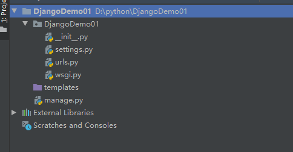
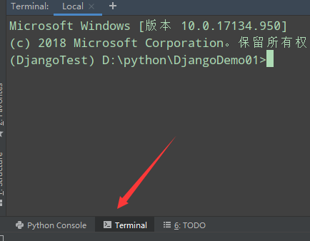
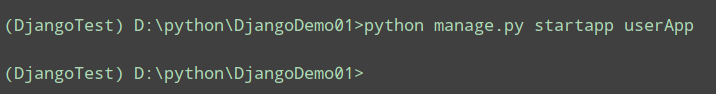
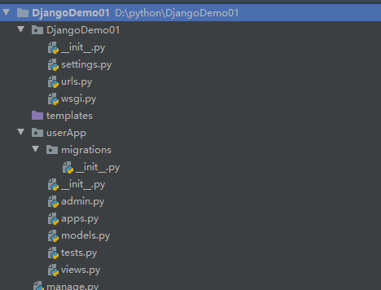
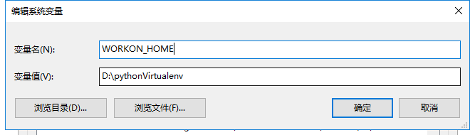
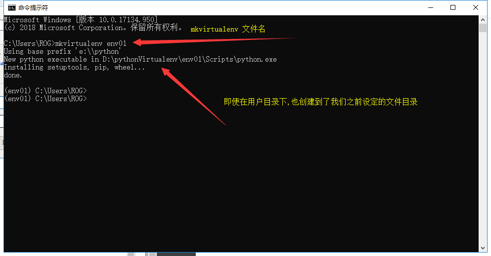

首先项目框架如下:

接下来配置app模块
点击左下角的Terminal

如果你打开页面了之后 最后一行没有开头的括号,那是因为你没有配置虚拟环境,可以查看上一篇博客
之后就是类似cmd指令的过程了
指令:python manager.py startapp app名
比如我接下来要创建一个用户模块的app app名为userApp

之后我们的项目框架就会如下:

这样就创建好了一个app实现模块化开发.
首先我们要在pip导入virtualenvwrapper-win包
直接在pip指令中输入 pip install virtualenvwrapper-win即可(关于pip镜像安装在我之前的博客里有,当然也可以上网搜索直接修改pip的数据源,修改为国内镜像源)
导入包了之后我们需要配置环境变量
配置环境变量
WORKON_HOME=文件夹地址

变量名为WORKON_HOME
变量值为虚拟环境存放的文件夹地址(前提是文件夹已经存在)
之后我们在cmd中创建虚拟环境,无论在那个目录下都会创建到之前环境变量设置的文件夹
创建虚拟环境也不用virtualenv了 而要使用mkvirtualenv

通过上面的截图我们也可以发现我们创建好的虚拟环境是直接自动激活的
当然也可以手动关闭以及手动激活,具体的可以查看Django官方文档
仅供学习! 2019.9.9